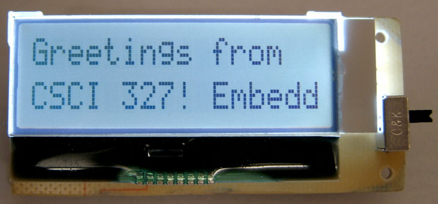
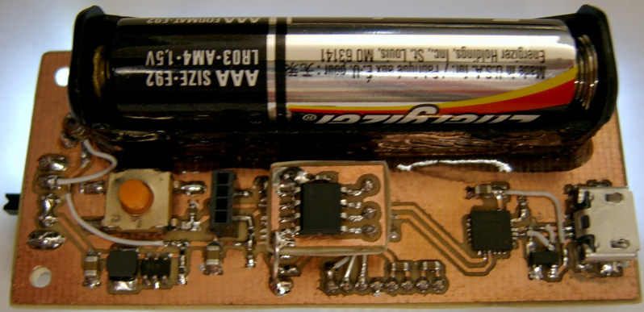
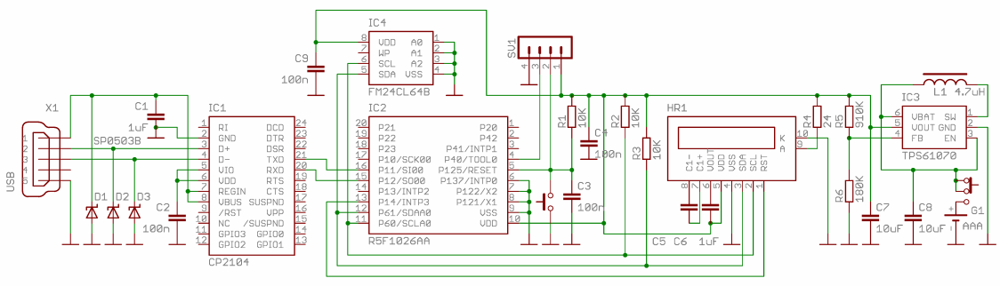

This project was completed as part of my Embedded Systems course at University of Wisconsin-Superior; the idea was to have a small device that would scroll text on a small LCD screen. In this project we use a two line LCD display with a 16 character width to display text characters. The device has the ability to connect to a computer via a micro-USB and text characters can be sent to the device through a terminal application. The device takes the text characters and stores them into an onboard FRAM chip. The device has an on/off switch that controls the standard AAA battery powering the device. Upon powering the device the display and the backlight are activated, the RL-78 microcontroller begins reading the stored text characters from memory, and the characters are sent to the display. The device will scroll multiple lines of text, the speed of which is controlled by sending an integer value at the beginning of the text file sent to the device.
 The device uses a Renesas RL-78 microcontroller as the main processing unit. The display is a Newhaven LCD 16x2 unit with backlight functionality and uses I2C communication with the RL-78. We use a Cypress 64Kb FRAM chip as storage, this unit is capable of instant writing and reading cycles along with the advantage that memory is instantly non-volatile, the chip is interface with the RL-78 via I2C. The device is capable of communication with a computer via a SiLabs USB bridge using UART interface. Power is supplied by a standard AAA battery and a Texas Instruments boost DC-DC converter.
When the device is first powered, either from an off state or from a reset condition, the device will first check the UART pins to determine whether it is connected to a computer. If a connection is detected the device will start a UART segment where it will begin reading information from the USB. This UART process uses a baud rate of 9600 with no parity and 8 bit data. The first character read is considered to be the scrolling speed of the display. The entire string entered by the user is then copied into the FRAM memory until a termination character of '$' is found. Once the termination character is hit, the unit will then begin reading the characters back from memory and sending this information to the LCD display.
ASEGN RCODE:CODE, 0 ; vector table
ORG RST_vect
DW RESET ; Reset vector
ORG INTIICA0_vect
DW I2C_ISR ; I2C vector
ORG INTIT_vect
DW INTIT_ISR ; 12-bit interval timer vector
ORG INTST0_vect
DW INTST0_ISR ; UART transmit vector
ORG INTSR0_vect
DW INTSR0_ISR ; UART receive vector
ORG 0xC0 ; option byte
DB 0x6E ; disable watchdog
DB 0x1F ; 1.67V/1.63V LVD off
DB 0xAA ; 8 MHz LS mode
DB 0x85 ; enable on-chip debugging
RSEG CODE ; code segment
RESET: movw SP, #SFE(CSTACK); setting up the stack pointer
; clock setup
mov HOCODIV, #0x02 ; set 8 MHz system clock
mov PER0, #0x90 ; enable RTC, I2C operation
mov OSMC, #0x90 ; select LFO as s/system clock
clrw AX ; power-up delay for 65 msec
pw_up:
br $+2 ; to debounce the button
subw AX, #1 ; 1 usec delay for CPU
bnz pw_up ; clocked at 8 MHz
; ports setup
mov ADPC, #0x01 ; set digital mode on all pins
mov PM1, #0xF2 ; configure port for input (p11, p12)
mov PMC1, #0xE0 ; set digital mode for P1
mov PM2, #0xF0 ; configure port for output
mov PM4, #0xF9 ; configure port for output
mov PMC4, #0xF9 ; set digital mode for P4
mov P1, #0x04 ; init port outputs
mov P2, #0x00
mov P4, #0x00
; I2C setup
mov IICWL0, #31 ; setup for 120 KHz operation @ 8 MHz
mov IICWH0, #34
mov SVA0, #0x7C ; own slave address
mov IICF0, #3 ; enable START w/out STOP, no reservation
mov IICCTL00, #0x0C
clr1 MK0H.5 ; enable I2C interrupts
set1 IICCTL00.7 ; enable I2C operation
set1 IICCTL00.6 ; cancel current operation
mov PM6, #0xFC ; configure port pins for output
mov P6, #0x00 ; init I2C pins
EI ; enable interrupts globally
call Init_System ; configure LCD display and memory
mov1 CY, P1.1 ; USB connected?
sknc
call get_USB ; YES - get string from USB
call init_FRAM_Read ; setup for reading from memory
; Interval timer setup
movw ITMC, #0x8FFF ; set 270 msec period, int. enable
clr1 MK1L.3 ; enable 12-bit timer interrupt
If no connection is found right after powering the device up, the device will begin reading information from the FRAM memory and sending the information to the LCD display. The scrolling speed is controlled by a wait state which is set using the integer value entered during a USB load.
init_FRAM_Read:
bt IICS0.6, $-0 ; wait for i2c ready
set1 IICCTL00.1 ; generate START condition
set1 IICCTL00.2 ; setup for ACK
mov IICA0, #0xA0 ; send I2C address + write
halt ; wait for the end of transfer
mov IICA0, #0x00 ; send address MSB
halt
mov IICA0, #0x00 ; send address LSB
halt
set1 IICCTL00.0 ; generate STOP condition
mov A, #20 ; 10 usec delay needed by I2C
dec A ; between STOP and START
bnz $-1
bt IICS0.6, $-0
set1 IICCTL00.1 ; generate START signal
mov IICA0, #0xA1 ; send slave address with r/w = 1
halt ; wait for ACK
clr1 IICCTL00.2 ; setup for NACK
set1 IICCTL00.5 ; request next char form FRAM
halt
mov A, IICA0 ; get speed
sub A, #0x30 ; sub 48d from ascii code
mov SPEED, A ; set the speed
set1 IICCTL00.0 ; generate STOP signal
mov A, #20 ; 10 usec delay needed by I2C
dec A ; between STOP and START
bnz $-1
ret
If the controller does see that a USB cable is connected it will call a routine that will begin reading characters from the USB cable and storing them into memory. The devices uses a USB to UART bridge that allows us to use the UART protocol through a USB interface. The signals must be sent with a Serial Communication program capabale of producing UART signals. PuTTy is a good program for this, although I also wrote my own Serial Communication program with Java that allows for UART communications through USB connections.
;==============UART SETUP====================================== init_UART: set1 PER0.2 ; enable clock for SAU0 mov SPS0L, #0x22 ; set 2 MHz SAU0 clock movw AX, #0x0022 ; set UART mode, CKS00 clock movw SMR00, AX movw AX, #0x8197 movw SCR00, AX ; enable TX, 8N1, 8-bit data movw AX, #0xCE00 ; setup for 9600 baud movw SDR00, AX movw AX, #0x8122 ; set UART mode, CKS01 clock movw SMR01, AX movw AX, #0x6197 movw SCR01, AX ; enable RX, 8N1, 8-bit data movw AX, #0xCE00 ; setup for 9600 baud movw SDR01, AX movw AX, #0x401 ; set output =1 movw SO0, AX mov SOE0L, #1 ; enable serial output mov SSC0, #2 ; enable receive interrupt mov SS0L, #3 ; start operation of channes 0&1 clr1 MK0H.1 ; enable receiver interrupt INTSR0 ret ;------------------------STORAGE I2C SETUP ROUTINES-------------------------- init_FRAM_Write: bt IICS0.6, $-0 ; wait for i2c ready set1 IICCTL00.1 ; generate start mov IICA0, #0xA0 ; send slave address AND r/w bit(last bit) halt ; r = 1 w = 0 mov IICA0, #0x00 ; send MSB memory start location halt mov IICA0, #0x00 ; send LSB memory start location halt ret ; done setting up, continue to UART
get_UART:
halt ; wait for char
mov A, RXD0 ; read char
mov IICA0, A ; send the char to FRAM
halt
cmp A, #term ; did we get ESC character?
bnz get_UART ; NO - loop back
set1 IICCTL00.0 ; STOP signal for I2C
mov ST0L, #0x03 ; STOP UART recieve
clr1 PER0.2 ; STOP UART clock
set1 MK0H.1 ; STOP UART interrupts
movw AX, #20 ; short delay
call delay
ret
During a display cycle, the unit reads characters from memory placing these into a 16 character array. Two seperate arrays are used, one array per display line. Once an array is filled it is send to the display via I2C communication. If the unit reads less than 16 characters during an array fill, the unit will fill the remaining positions with a 'space' character. This process is then repeated.
;-----------------------------FILL ARRAY ROUTINE-----------------------
fillArray:
movw AX, HL ; start address
addw AX, #16
movw DE, AX ; end address
fa1:
mov A, ready ; check the ready flag
cmp0 A ; if 1, we are done
bnz fa2
mov A, #10 ; 10 usec delay needed by I2C
dec A ; between STOP and START
bnz $-1
bt IICS0.6, $-0
set1 IICCTL00.1 ; generate START signal
mov IICA0, #0xA1 ; send slave address with r/w = 1
halt ; wait for ACK
clr1 IICCTL00.2 ; setup for NACK
set1 IICCTL00.5 ; request next char form FRAM
halt
mov A, IICA0 ; get character
set1 IICCTL00.0 ; generate STOP signal
cmp A, #term ; check for ESC
bnz fa3 ; we are done
fa2:
mov ready, #1 ; end of string flag
mov A, #0x20 ; a = 'space' character
fa3:
mov [HL], A ; array1[i] = a (input[i])
incw HL ; inc array pointer
movw AX, HL ;
cmpw AX, DE ; did we hit 16 chars?
bnz fa1 ; no - loop back
mov A, #20 ; 10 usec delay needed by I2C
dec A ; between STOP and START
bnz $-1
ret ; ret to caller
Projects